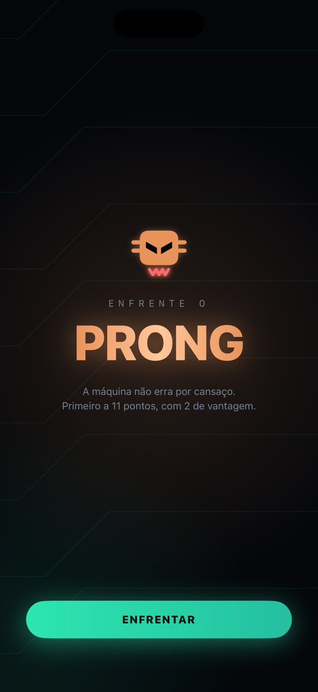
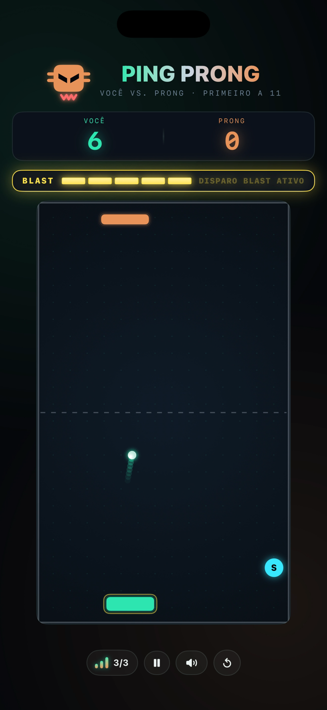

Você está no navegador embutido de um aplicativo. Aqui os botões de e-mail e da App Store podem não responder ao toque. Toque no menu (⋯ ou ⋮) e escolha Abrir no navegador.
Enfrente o poderoso PRONG
O PRONG não erra por cansaço. Não se distrai, não tem pressa e não vai facilitar. Um jogo de ping pong de uma mão só.
Partida real, gravada em iPhone — sem edição de velocidade


Cinco rebatidas certas seguidas carregam a barra. Quando ela fica dourada, você tem instantes para tocar na tela no exato momento em que a bola encosta na raquete. Acertar o tempo devolve a bola numa velocidade que o PRONG dificilmente alcança. Perder o ponto zera a carga — é risco de verdade.
Uma cápsula é lançada do centro da quadra e não cai no seu colo: você precisa interceptá-la com a raquete, largando a bola por um instante. Ela deixa a bola mais lenta enquanto estiver do seu lado. Dura 8 segundos.
A outra cápsula aumenta o tamanho da sua raquete pelos mesmos 8 segundos. As duas podem estar ativas ao mesmo tempo — e o PRONG também as pega, se você deixar.
Um botão cicla entre três níveis. Cada um acelera a bola e o PRONG na mesma medida, então subir a velocidade nunca é uma forma de facilitar. Vence quem chegar a 11 pontos com 2 de vantagem, a regra oficial do tênis de mesa.
Gire o aparelho no meio da partida: o placar, a carga do BLAST e a posição da bola continuam exatamente onde estavam.
Estáveis, medidos em aparelho real. Resposta tátil a cada rebatida, ponto e disparo.
Os efeitos sonoros obedecem à chave de silencioso e nunca interrompem a sua música. As animações respeitam Reduzir Movimento.
O porte já está pronto e rodando.
O Ping Prong foi reescrito em Kotlin, do zero — nenhuma linha compartilhada com a versão do iPhone. Mesma quadra, mesmo BLAST, mesmos bônus, mesma regra dos 11 pontos com 2 de vantagem. Já roda a 60 quadros por segundo, medidos num aparelho de 2019 — o mesmo número do iPhone.
O que falta não é código: é o processo da Google Play, que inclui um período obrigatório de teste fechado antes de qualquer app novo poder ir ao ar. Por isso não tem data ainda — quando tiver, ela aparece aqui.
Quer jogar antes? O teste fechado precisa de gente de verdade, e há vaga. Escreva e eu te coloco na lista.
Se o botão não abrir, o endereço é hasman.corp.support@gmail.com
Seu recorde de rebatidas e suas vitórias ficam gravados no seu aparelho e não vão para lugar algum. O app não faz uma única chamada de rede, não usa nenhum SDK de terceiros e não pede nenhuma permissão. Leia a política de privacidade.
Encontrou um problema, tem uma sugestão ou quer testar o jogo antes do lançamento? Escreva — todo e-mail é lido por uma pessoa.
Resposta normalmente em até dois dias úteis. O jogo é feito por uma pessoa só.